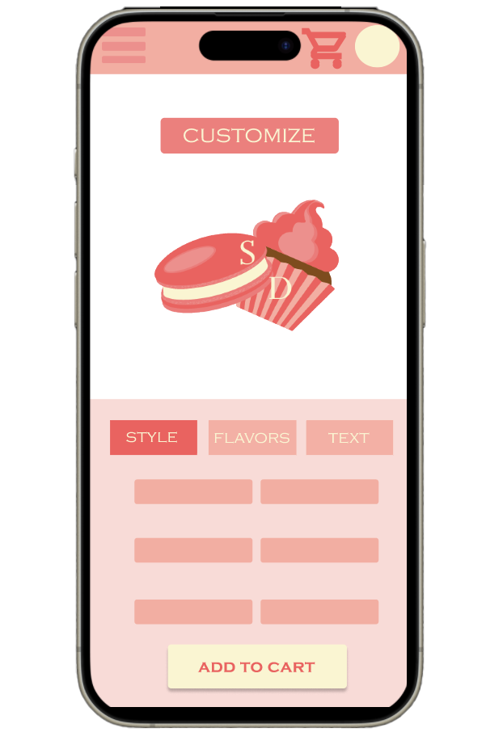
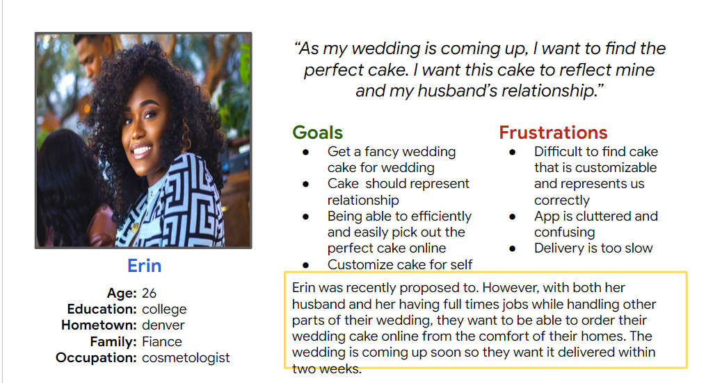
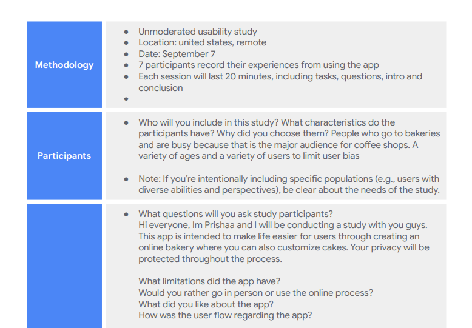
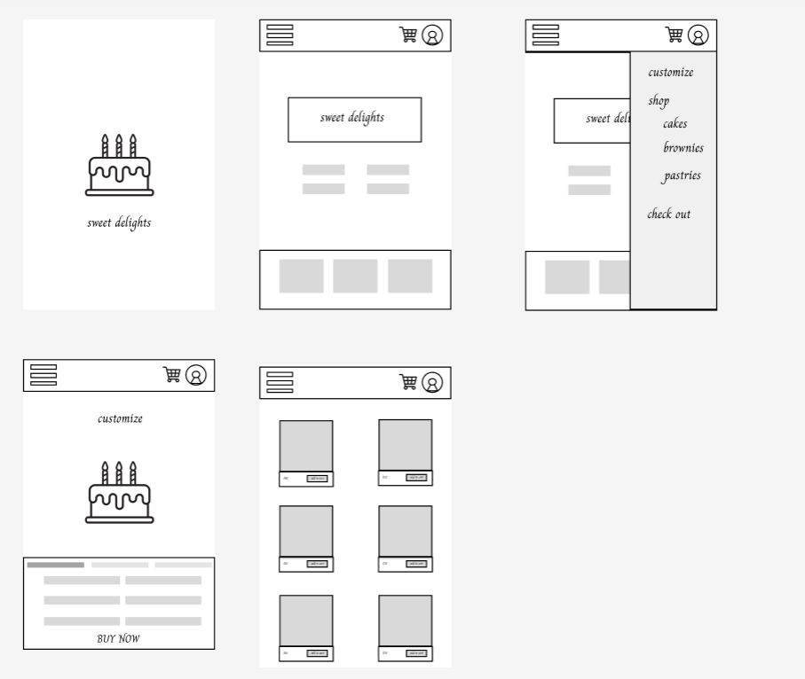
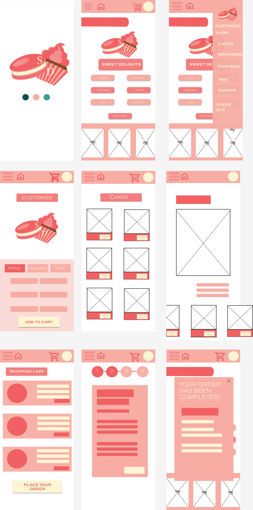
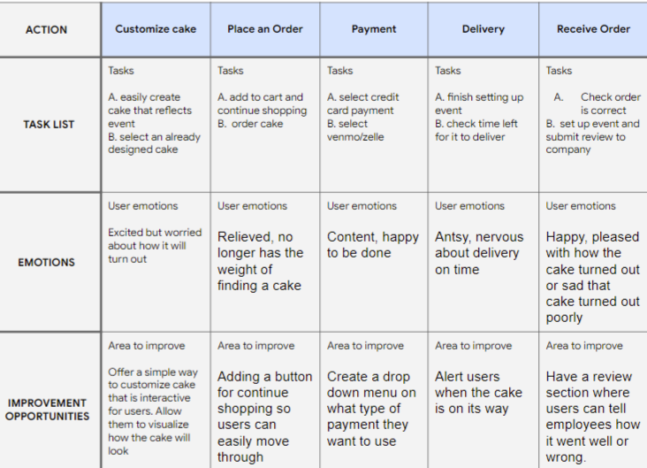
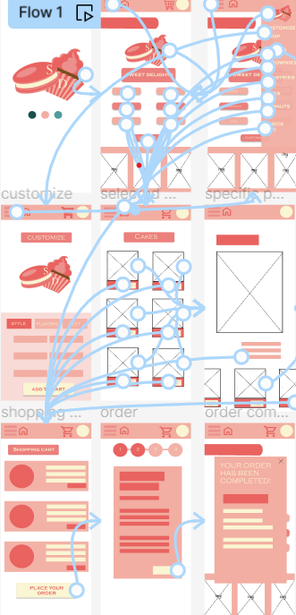

SWEET DELIGHTS
Desserts, with their indulgent sweetness and meticulous designs, serve as representations of celebration, infusing special occasions with a touch of delight and creating a shared experience that lingers in the memory, elevating joyous moments to a symphony of flavors. This design solved the problem of customers having to go in store to customize their cakes or foods for special occasions allowing them to do it from the comfort of their home. I incorporated a logo that I created to further represent the brand.
DESIGN PROCESS
The initial step in this design was to create a user persona. Creating a persona assisted me in solving the problem more efficiently and empathizing with the user. At the core of UX Design is the community, creating a persona to represent the community enhanced my ability to design a better website. Finding a target audience enabled me to create more functional apps for people within those age groups.
Next, I created a research plan including the types of questions I would ask a user in a usability test and the methology with which it would work. Additionally, I incorporated key performance indicators to measure the extent to which my design was successful. I created research goals and an in depth research plan adding to it along the way as my design developed.
The next step was to transfer my paper wireframe plans to Figma. As I began the design, I made sure to prioritize the user problem and create a functional design that was easy to use on a small screen. Because these were designs for an app rather than a website, creating more icons than text was integral to enhancing the user flow and creating a better architecture of the website.
Finally it was time to create a prototype with color. I used hues of pinks and yellows to enhance the user experience. However after testing the initial design through conducting a user study, I decided to add some tints of teals and have the logo more featured, increase text size, and create a bigger nav bar. The final design after the user study is featured above taking into account any setbacks users faced throughout the study and creating solutions to pain points they found.
User Tests
Throughout the design process, I conducted several user studies measuring how the users completed their tasks, opportunities to improve, emotions they felt, and feedback I recieved. I organized this onto a spreadsheet in order to be able to easiily view user pain points and positive feedback in one place. I repeated this process several times as I updated my design with new features and improvements from previous suggestions.
User Flow
Finally, I created a user flow to implement interactiveness with the prototype. The interactivity would allow engineers to better understand the design as well as let users understand how the final app will work during user tests. I established a clear user flow that was smooth and easy to go through using numerous icons and the principles of designs to capture users attentions to important buttons or texts.
Takeaways and Additional Steps
The central part of this design was the user. I was able to assess my abilities of empathazing with users and incorporate feedback into my designs. It allowed me to learn that user testing is extremely integral in UX Design in order to maximize usablity. I was able to improve my skills in Figma and UX Design through various ways to create the smoothest user flow. Additionally, in the future, I would like to play around with a more diverse color palette rather than pinks. From this design, I have learned the importance of user centered design and being able to create a design that matches the issue that many customers are facing.